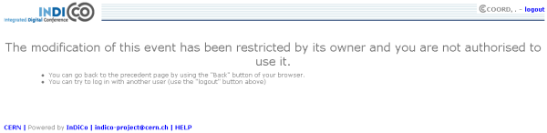
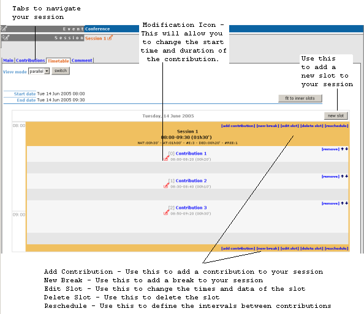

| Prev | Chapter 1. Session Co-ordinators Guide | |
| Prev | Chapter 1. Session Co-ordinators Guide | |
There are three levels of co-ordination modification that the Conference Manager can give to session co-ordinators.
If you do not have access or the rights to any part within your session you will be presented with this page:

All Session Co-ordinators can:
Manage the timetable with restrictions - adding contributions, creating breaks, reschedule contributions and breaks.
View contribution list (cannot modify contributions)
View the sessions' main information (cannot modify)
View comments from the conference manager (cannot modify)
Your co-ordination will mainly take place within the Timetable tab of your session:

If the conference manager has allowed contribution modification rights you can:
Modify the main data of the contribution.
Set the access controls for the contribution - i.e. give submission rights to presenters or allow others to manage the contribution.
Add / remove sub contributions.
To modify the contribution click on it's name from either the timetable or the contribution list.
The contribution management area (For a more detailed explanation please see "Contribution" in the Indico User Guide 2.4.3.1):

If the conference manager has allowed unrestricted timetable management rights you can:
Add contributions and breaks, reschedule contributions and breaks as before
Add, Edit and Delete slots
The timetable management area will be the same as it was with the basic rights with the options to manage the slots:
